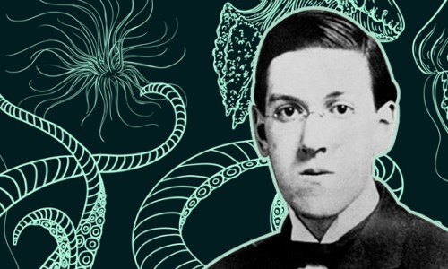
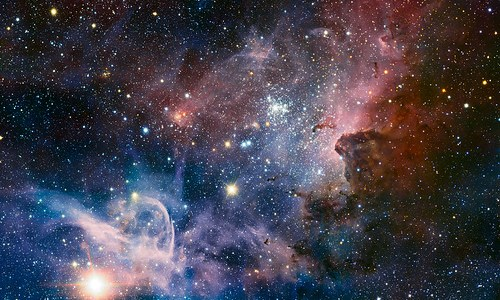

クトゥルフ神話とは
ホーム
クトゥルフ神話とは
登場する神格・生物
クトゥルフ神話TRPG

クトゥルフ神話とは、アメリカの小説家、ハワード・フィリップス・ラヴクラフトの小説をもとに、彼が友人の作家達との間で架空の神々や地名や書物等の固有の名称を貸し借りすることで作り上げられた、架空の神話のことである。
また、作中で「クトゥルフ」と呼ばれる神格が登場するが、クトゥルフ神話の名前の由来はこの神格ではなく、ラブクラフトの小説、「クトゥルフの呼び声」に基づいている。

現在のクトゥルフ神話の作品は非常に多種多様になっており、様々なものでクトゥルフ神話が構成されているが、作品のほとんどは（例外もあるが）「宇宙的恐怖（コズミック・ホラー）」をテーマにしている。
宇宙的恐怖とは、広大な宇宙、あるいは人智を超えた超常的存在と対峙した人間が感じるような恐怖や孤独感のことである。そのほとんどが、人類の価値観などが全く通用せず意思疎通や理解することも不可能なものである。
クトゥルフ神話は、ラブクラフトの生前に体系化されたわけではなく、彼の死後、オーガスト・ダーレスによって生前、出版されなかったラブクラフトの作品の単行本を出版し、さらに自身も新しい作品を書いていった。その中でそれらの作品はクトゥルフ神話として体系化されたいった。現在では、もはや一つのジャンルとして、成り立つぐらいにまで発展している。